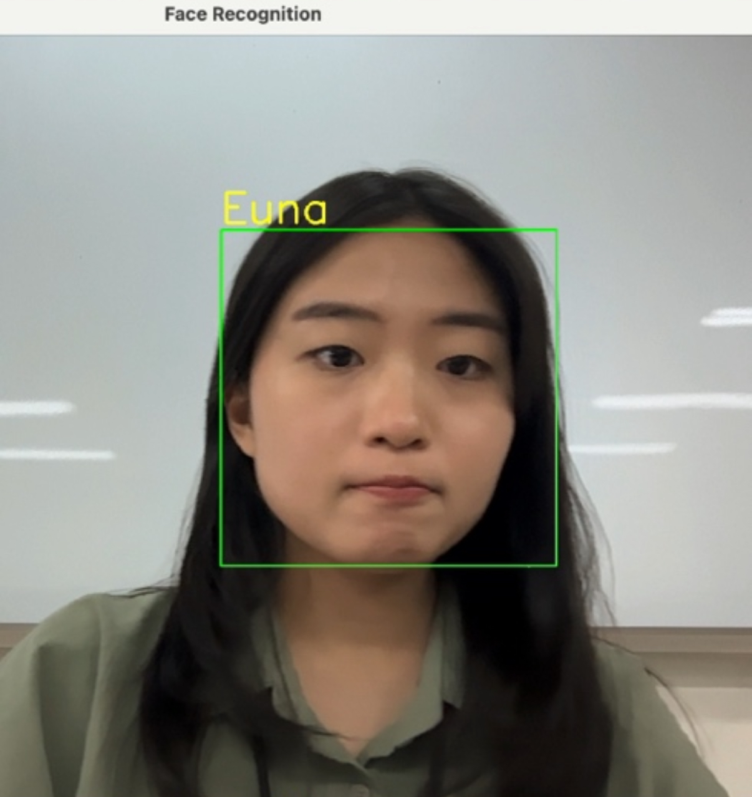

Deep Learning이 제한된 환경에서 구현한
OpenCV 기반 전통적 얼굴 인식 + 제스처 기반 잠금 해제 시스템
(Deep Learning 미사용)
FaceLock은 실시간 카메라 영상에서 얼굴을 검출·인식하여, 인증되지 않은 사용자의 얼굴은 기본적으로 모자이크 처리하고 인증된 사용자에 한해 모자이크를 해제하는 얼굴 인식 기반 접근 제어 시스템입니다.
딥러닝 및 pretrained 모델 사용이 제한된 환경에서, OpenCV가 제공하는 전통적인 얼굴 인식 알고리즘을 활용해 실제로 동작 가능한 보안 시스템을 구현하는 것을 목표로 했습니다.
프로젝트 초기에는 Haar Cascade 얼굴 검출 결과만을 활용하여 검출된 얼굴 영역(ROI)을 그대로 비교하거나 저장하는 방식으로 얼굴 인식을 시도했습니다.
그러나 동일 인물임에도 프레임마다 얼굴 위치·크기·조명이 달라졌고, ROI 픽셀 값 변화로 인해 단순 비교 방식은 신뢰할 수 없는 결과를 보였습니다.
이를 통해 얼굴 검출과 얼굴 인식은 본질적으로 다른 문제이며, 얼굴 전용 특징 추출 알고리즘이 반드시 필요하다는 결론에 도달했습니다.
얼굴 이미지를 자동 저장하는 과정에서 배경이 포함되거나 얼굴이 일부만 저장되는 문제가 반복적으로 발생했습니다. 이로 인해 학습 데이터 품질이 일정하지 않아 인식 성능이 크게 저하되었습니다.
Haar Cascade 결과에 padding을 적용하고, 최소 얼굴 크기 조건을 조정하여 품질이 낮은 얼굴 이미지를 제외함으로써 인식 성능을 점진적으로 개선했습니다.
딥러닝을 사용할 수 없는 환경에서, OpenCV가 기본 제공하는 LBPH(Local Binary Patterns Histogram) 알고리즘을 얼굴 인식의 핵심 기술로 채택했습니다.
사용자별 얼굴 이미지를 여러 장 확보하고, 조명과 각도 다양성을 반영함으로써 인식 안정성을 개선했습니다.
프레임 단위 인식 특성으로 인해 동일 인물임에도 label이 순간적으로 변경되는 문제가 발생했습니다.
동일한 인식 결과가 연속 프레임에서 일정 횟수 이상 유지될 때만 최종 인식으로 확정하도록 로직을 보완하여 이름 라벨 표시 안정성을 확보했습니다.
Haar Cascade 얼굴 검출 → LBPH 얼굴 인식 →
모자이크 기본 적용 → 인증 성공 시 해제 + 이름 표시 →
제스처 시퀀스 기반 잠금 해제
본 프로젝트는 딥러닝 없이 전통적인 컴퓨터 비전 기법만으로 얼굴 인식 기반 접근 제어 시스템을 구현한 사례입니다. 제약 조건을 고려한 설계 선택과 반복적인 개선 과정을 통해 실제로 활용 가능한 보안 시스템을 완성했습니다.